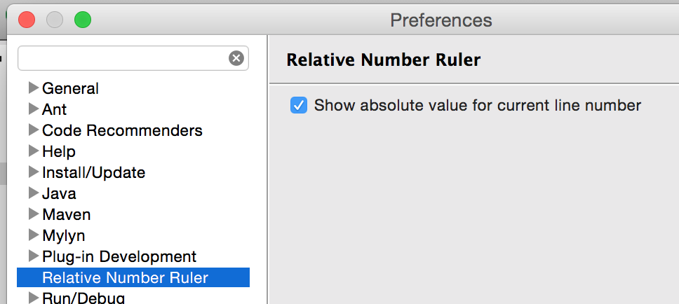
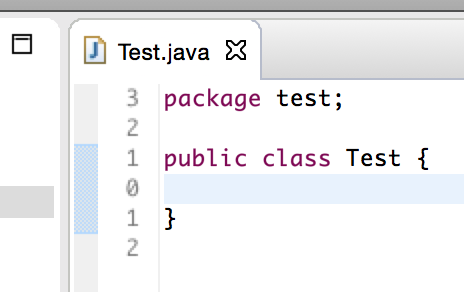
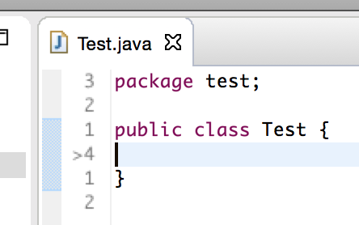

Relative Line Number Rule Eclipse Plugin
Shows a line number ruler with line numbers relative to the current caret position. This helps with text editing when using a Vim plugin in Eclipse such as Vrapper.

Install from the update site at http://matf.github.com/relativenumberruler/updatesite
The ruler is enabled by default and can be disabled using the context menu on the ruler.
The current line can be shown either as relative (0) or absolute (current line number):

Relative

Absolute
